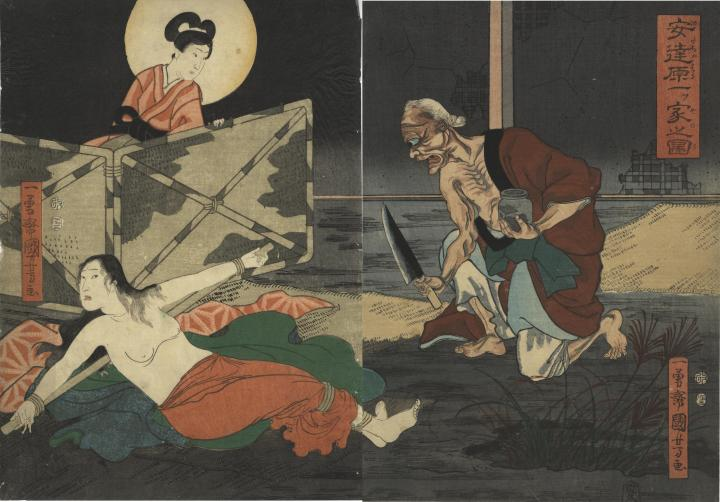

鬼婆となった岩手が、包丁で妊婦を斬りつけようとしている。
著作者：一勇齋國芳／出典：親書誌：U426_nichibunken_0350：安達原一ツ家之図；アダチガハラ ヒトツヤ ノ ズ／日付：2014／資源識別子：U426_nichibunken_0350_0001_0000
Copyright (c)2010- International Research Center for Japanese Studies, Kyoto, Japan. All rights reserved.